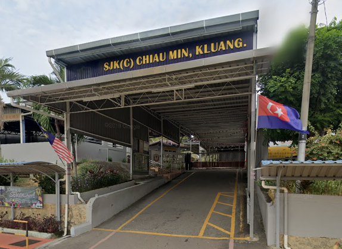
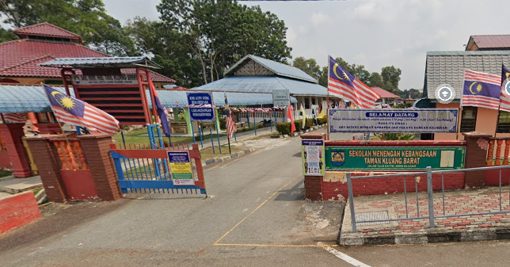

I started school at the age of 5 and that time was in 2009. I went to Tadika Do Re Mi which is located in Kluang, Johor and it is close to my home. This kindergarten is a private kindergarten and it uses Chinese as the main language in learning. In the beginning, it must have been difficult for me to learn at first but over time I was able to catch up and understand what I was learning. With the help of my teachers I was able to enjoy my study time at Kindergarten with joy and satisfaction. There I was able to make a lot of friends and I also got to know the world a little more widely.
Primary School

The next year arrived after two years of studying in Kindergarten, which is 2011. I started entering the primary school phase. I studied in primary school for 6 years. I go to SJK(C) Chiau Min. This school is also located in Kluang, Johor. Furthermore, as you can see the letter "C" in the name of the school, I must have attended a Chinese school. All subjects except English, Malay and Islam do not use Chinese as the main language of learning. (Obvi) At school it was very fun because I was able to make friends with many people and also get an experience that not everyone gets which is like learning another language other than English and Malay. There I also learned to be a disciplined person, a responsible person and much more. There were also many activities at the school and all of them I participated in were very enjoyable and are still vivid in my memory even though I was very young at the time.
High School

Time flies again, now it's 2017 and I'm 13 years old. 5 years I studied in high school. This time was more challenging for me because I had to go to a regular national school. That is SMK Taman Kluang Barat in Kluang, Johor. Why do I say challenging? It's because after I got used to the way of learning in a Chinese-type school for 8 years, now I have to get used to the way of a normal national school, which is a school that uses Malay as the first language in learning. It's not that I don't understand Malay, it's just that I'm used to Chinese when I'm studying. During my first year studying at the school, it was very difficult for me to catch up with the new way of learning for me. It's because I'm like a fool who never learns about the basics of learning. For example for Mathematics. When the teacher told me to answer random ciphers, I would freeze because I had to translate in my brain from Chinese to Malay quickly. Sometimes I could answer but when I couldn't answer the teacher would scold me and also accuse me that I didn't memorize the code even though I was 13 years old. It makes me disappointed in myself. Again, when the science subject formula. It's not that I don't know, it's just that the formula is different in Malay and Chinese. In the first year I was in the first class, but due to the challenges I faced, in the next year I was demoted because my reputation fell. Two years I was placed in the second class, that is in the year 2018-2019. In 2020 I have started to catch up again to get a good reputation and get into the first class until I finish studying and pass with distinction in the Malaysian Certificate of Examination (SPM). Today I also got a lot of valuable memories for myself and I will remember them anytime.
University
In 2021, I have received an offer to continue my studies to a higher level at UiTM Johor Branch, Segamat Campus. I am very happy because I got an offer to UiTM. I have been given a field in information management as my course to continue studying. Although I am not interested in this course but I still continue because I do not want to wait for the appeal application phase. At the same time I try to accept even though it is difficult. This is because the field I am applying for is very far from what is given which is art. But I have gone through it and I can feel that this course is not as bad as I expected. I still enjoy this course. I was able to meet a new friend who was very fun and never stopped laughing. They are not too serious in friendship. The support they gave was beyond my expectations.